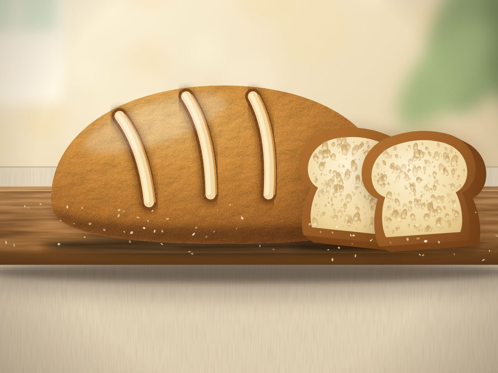

Dlaczego keto chleb wychodzi gumowy? 6 najczęstszych błędów i jak ich uniknąć
Keto chleb wyszedł gumowy w środku? To zwykle kilka powtarzalnych błędów, a nie brak talentu. Sprawdź 6 najczęstszych i jak je naprawić.

Keto chleb pachnie zachęcająco, wygląda dobrze, a po przekrojeniu w środku… guma. Znasz to? Spokojnie: to bardzo rzadko kwestia braku talentu. Gumowy środek ma zwykle kilka powtarzalnych przyczyn, a większość z nich da się usunąć bez nowego przepisu.
W skrócie
- Najczęstsza przyczyna to niedopieczony środek. Piecz dłużej i w niższej temperaturze.
- Chleb kroi się dopiero po całkowitym wystudzeniu.
- Babkę płesznik i jajka warto ważyć, a nie odmierzać na oko.
- Mąk keto nie zamienia się 1:1 – ani między sobą, ani na pszenną.
1. Środek jest niedopieczony
Keto chleby są wilgotniejsze i gęstsze niż pszenne (dużo jajek, tłuszczu i błonnika), a ich wierzch rumieni się, zanim środek zdąży się dopiec. Z zewnątrz bochenek wygląda na gotowy, w środku jest wciąż mokry i sprężysty.
- Piecz nieco dłużej i w niższej temperaturze, niż Ci się wydaje.
- Gdy wierzch ciemnieje, przykryj bochenek folią aluminiową.
- Sprawdzaj środek termometrem kuchennym. Patyczek bywa zawodny, bo mokre ciasto keto długo wygląda na surowe. W wielu poradnikach podaje się temperaturę wnętrza rzędu 95 °C, ale zawsze kieruj się wskazówkami z przepisu.
2. Kroisz na gorąco
To pokusa nie do pokonania: pachnie, więc chcesz spróbować od razu. Tyle że struktura chleba keto ustala się dopiero podczas stygnięcia, gdy babka płesznik i jajka „zwiążą” ciasto. Ciepły chleb jest wilgotny i sprężysty nawet wtedy, gdy jest dobrze upieczony.
Rozwiązanie: zostaw bochenek na kratce, aż całkowicie wystygnie (zwykle co najmniej godzinę, a najlepiej dłużej). Dopiero wtedy kroj.
3. Za dużo (albo za mało) babki płesznik
Babka płesznik jest kluczowa w pieczywie keto, ale to właśnie ona najczęściej odpowiada za gumowy, galaretowaty miękisz. Za dużo babki to guma, za mało – chleb, który się kruszy.
- Waż ją na wadze kuchennej. Łyżeczka „z czubkiem” potrafi ważyć dwa razy więcej niż płaska.
- Po dodaniu do ciasta odczekaj kilka minut, aż napęcznieje, i dopiero wtedy oceń konsystencję.
- Jeśli używasz większej formy lub dodajesz więcej płynów, nie dosypuj „na wszelki wypadek” kolejnej łyżki.
4. Jajka: za dużo albo za duże
Jajka nadają strukturę, ale ich nadmiar daje sprężysty, „omletowy” miękisz i wyraźny jajeczny zapach. Pamiętaj też, że jajka różnią się wielkością: „trzy jajka” w rozmiarze M i L to zauważalnie inna ilość ciasta.
Rozwiązanie: jeśli przepis podaje wagę, zważ jajka po wbiciu. W przeciwnym razie użyj rozmiaru, który przewidział autor.
5. Zamieniasz mąki 1:1
To błąd numer jeden u osób, które próbują „naprawić” przepis tym, co mają w szafce. Mąka kokosowa chłonie płyny kilkukrotnie mocniej niż migdałowa, łubinowa ma inny smak i strukturę, a babka płesznik w ogóle nie jest mąką. Zmiana jednego składnika bez przeliczenia reszty niemal zawsze kończy się gumą lub suchym kamieniem.
Zanim zaczniesz eksperymentować, przeczytaj nasz przewodnik po mąkach keto. Znajdziesz w nim prostą ściągawkę, co do czego służy.
6. Zła forma albo zbyt wysoka temperatura
Za szeroka forma daje płaski, zbity bochenek, za wąska – wysoki, ale niedopieczony w środku. Zbyt wysoka temperatura zamyka skórkę, zanim wnętrze zdąży się dopiec.
- Użyj formy o rozmiarze, który przewiduje przepis.
- Sprawdź, czy Twój piekarnik trzyma temperaturę. Tani termometr piekarnikowy potrafi rozwiać wiele wątpliwości.
- Piekarniki z termoobiegiem zwykle wymagają nieco niższej temperatury niż ta podana „bez termoobiegu”.
Jak uratować gumowy chleb
Nie wyrzucaj go. Gumowy środek świetnie znosi dalszą obróbkę:
- Pokrój w cienkie kromki i opiecz w tosterze lub na suchej patelni. Wierzch zrobi się chrupiący, a guma zniknie.
- Zrób grzanki do zupy lub sałatki: pokrojone w kostkę i dopieczone w piekarniku.
- Wysusz i zmiel na keto bułkę tartą.
Lista kontrolna przed pieczeniem
- Składniki są zważone, zwłaszcza babka płesznik.
- Ciasto miało kilka minut na napęcznienie.
- Piekarnik jest rozgrzany do właściwej temperatury, a forma ma właściwy rozmiar.
- Mam termometr albo wiem, po czym poznam, że środek jest gotowy.
- Chleb zostanie do całkowitego wystygnięcia, zanim go pokroję.
Najczęstsze pytania
Dlaczego keto chleb pachnie jajkiem?
Zwykle winne są jajka: im jest ich więcej, tym wyraźniejszy zapach. Często słabnie po wystygnięciu chleba. Pomagają przyprawy (np. kminek), a w niektórych przepisach także odrobina octu jabłkowego w cieście.
Czy keto chleb może być tak miękki jak zwykły?
Nie do końca. Ma inną strukturę: jest bardziej wilgotny i zwarty. Dobre pieczywo keto smakuje świetnie, ale nie jest kopią pszennego, i lepiej oceniać je po własnych zasadach.
Jak przechowywać keto chleb?
W lodówce zwykle przez kilka dni, w szczelnym pojemniku lub owinięty papierem. Na dłużej najlepiej pokroić go na kromki i zamrozić, a przed jedzeniem podgrzać w tosterze.
Chcesz mieć pewność, że wyjdzie?
Właśnie dlatego tworzymy nasze przepisy: każdy wypiek ma być przetestowany tak, żebyś nie musiała ani nie musiał zgadywać. Zobacz, nad czym pracujemy: ebook Keto pieczywo: 12 przepisów na chleb i bułki. A jeśli dopiero zaczynasz z keto, przeczytaj 7 prostych zasad na start.